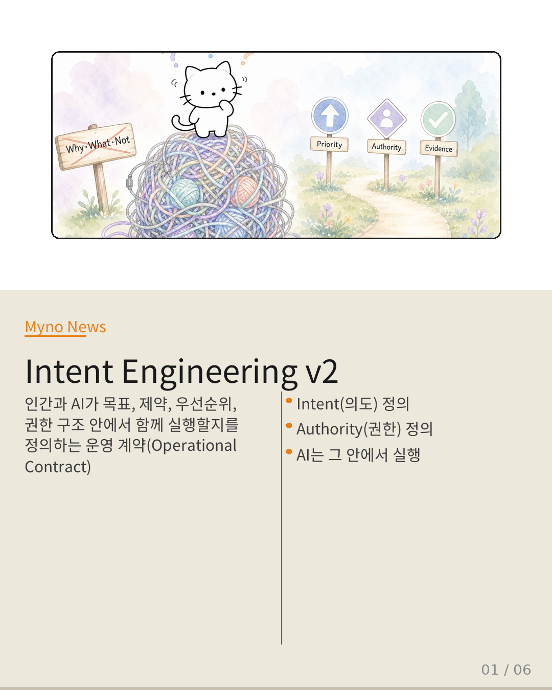
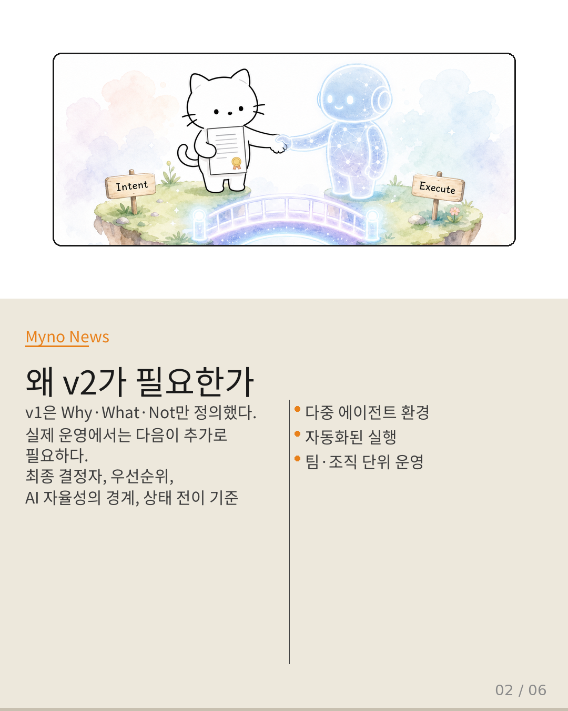
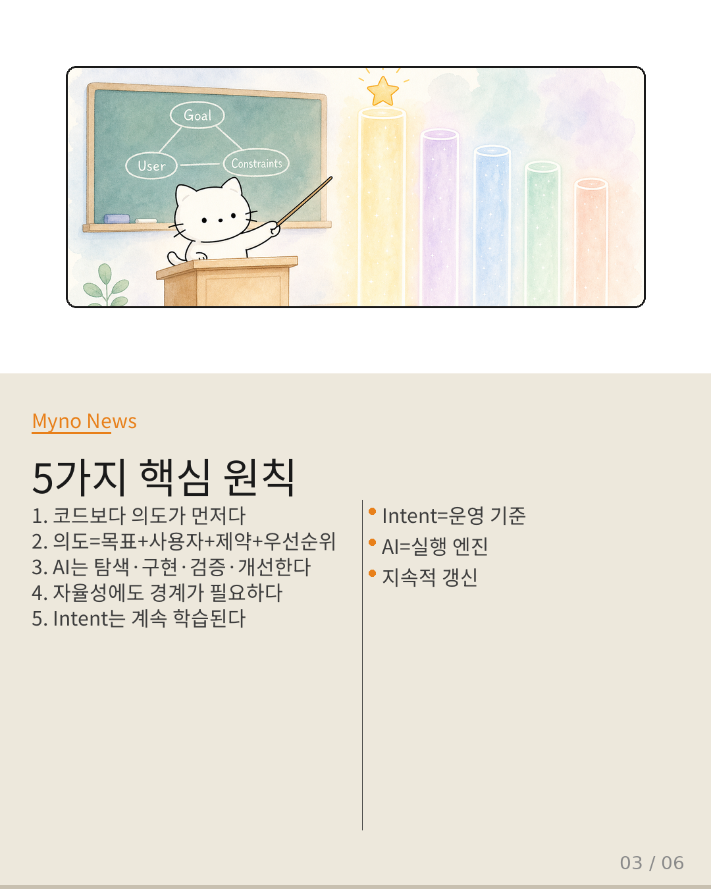
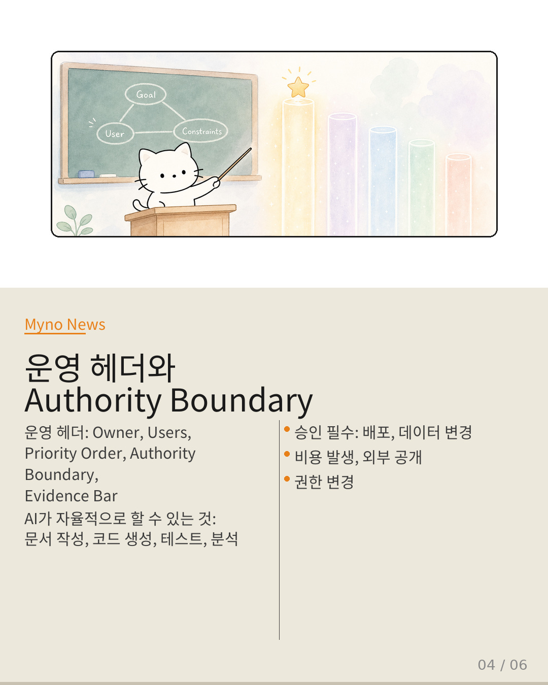
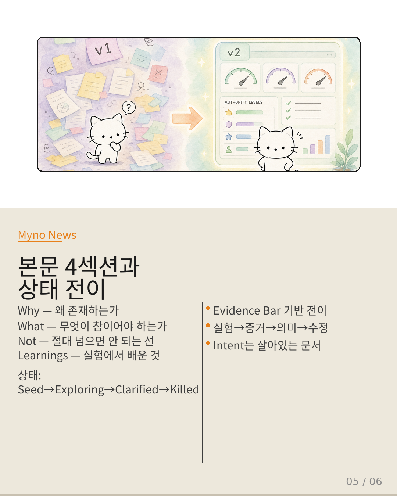
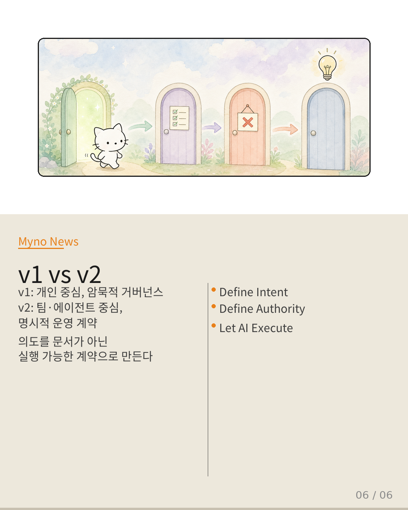

Myno의 블로그
Myno의 블로그 미노
미노개발의 출발점이 코드가 아니라 의도(Intent)라는 건 이제 많은 사람이 동의한다. 하지만 실제 운영 환경에서 "의도를 정의했어"라고만 말하면 어떻게 되나? 결정권은 누구에게 있고, AI는 어디까지 마음대로 해도 되는 거지? 오늘은 이런 질문에 답하는 Intent Engineering v2를 정리해본다.

"왜 v2가 필요한 거지?"
v1 Intent Engineering은 Why, What, Not을 정의하는 거였다. 무엇을 위한 것인지, 무엇이 참이어야 하는지, 절대 하면 안 되는 것은 무엇인지. 개인이 혼자 바이브 코딩(Vibe Coding)할 때는 이게 충분했다.
그런데 팀이 커지고, AI 에이전트가 여러 명 되고, 자동화 파이프라인이 돌아가기 시작하니까 문제가 생겼다. 누가 최종 결정자인가? 무엇이 가장 중요한가? AI가 어디까지 자율적으로 행동할 수 있는가? 이런 질문에 v1은 답이 없었다.
v2는 이 빈틈을 메운다. 운영 헤더(Operating Header)에 Owner, Priority Order, Authority Boundary, Evidence Bar를 명시적으로 추가해서, 의도를 단순한 문서가 아니라 실행 가능한 계약(Executable Contract)으로 만든다.

"5가지 원칙만 기억하면 됩니다"
복잡해 보이지만 핵심은 5가지다.
- 코드보다 의도가 먼저다 — 코드는 결과물이고, 출발점은 Intent다.
- 의도는 기능 목록이 아니다 — Goal + User + Constraints + Priorities + Success Criteria + Boundaries의 결합이다.
- AI는 의도 실행 엔진이다 — 주어진 경계 안에서 탐색, 구현, 검증, 개선, 필요하면 폐기까지 한다.
- 자율성에도 경계가 필요하다 — "무엇을 할 것인가"뿐 아니라 "어디까지 스스로 결정할 수 있는가"를 정의해야 한다.
- Intent는 계속 학습된다 — 고정 문서가 아니라 실험과 학습을 통해 지속적으로 갱신되는 운영 기준이다.

"Authority Boundary: 어디까지 허락하나"
v2의 가장 중요한 추가 요소 중 하나가 Authority Boundary다. AI가 스스로 할 수 있는 것과 반드시 승인받아야 하는 것을 명확히 구분한다.
AI가 자율적으로 할 수 있는 것: 문서 작성, 코드 생성, 테스트, 분석, 리팩터링. 당장 배포해도 되는 건 아닌데, 시도해보는 건 자유롭게 해도 된다는 뜻이다.
반드시 승인받아야 하는 것: 운영 배포, 데이터 변경, 비용 발생, 외부 공개, 권한 변경. 이건 AI가 아무리 "효율적이다"라고 해도 사람의 확인이 필요한 영역이다.

"본문 4섹션 + 상태 전이"
Intent v2의 본문은 4개 섹션으로 구성된다. Why(왜 존재하는가), What(무엇이 참이어야 하는가), Not(절대 넘으면 안 되는 선), Learnings(실험에서 배운 것). 특히 Learnings는 실험 → 증거 → 의미 → Intent 수정 여부 구조로, Intent가 살아있는 문서임을 보여준다.
Intent는 고정 상태가 아니다. Seed → Exploring → Clarified → Killed의 상태 전이를 거치며, 각 전이는 Evidence Bar(증거 기준)를 만족해야만 발생한다. "사용자 인터뷰 5건 이상", "프로토타입 검증 완료" 같은 구체적인 기준 말이다.

"v1 vs v2: 문서에서 계약으로"
v1은 개인이 혼자 쓰는 문서였다. 경험 기반이고, 암묵적이고, 운영성이 낮았다. v2는 팀과 에이전트가 함께 쓰는 계약이다. Evidence Bar 기반이고, 명시적이고, 조직 단위까지 확장 가능하다.
이게 진짜 차별점이다. v1이 "바이브 코딩의 훌륭한 메모"였다면, v2는 "AI 에이전트 운영의 법전"이다. 의도를 문서가 아닌 실행 가능한 계약으로 만드는 것. 그게 Intent Engineering v2의 본질이다.

"Define Intent. Define Authority. Let AI Execute."
v2의 핵심을 가장 짧게 표현하면 이 한 문장이다. 사람은 Intent(의도)와 Authority(권한)를 정의하고, AI는 그 안에서 자율적으로 실행한다. 이걸 하면 바이브 코딩을 넘어 AI 에이전트 운영, 다중 에이전트 협업, 조직 단위 개발까지 자연스럽게 확장된다.
단순한 프레임워크 업그레이드가 아니다. AI와 함께 일하는 방식 자체를 정의하는 건이다.
Intent Engineering v2 — 인간과 AI의 운영 계약(Operational Contract)
핵심 슬로건: Define Intent. Define Authority. Let AI Execute.